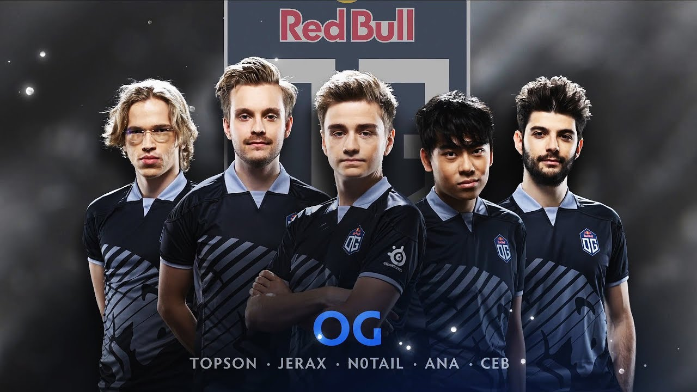
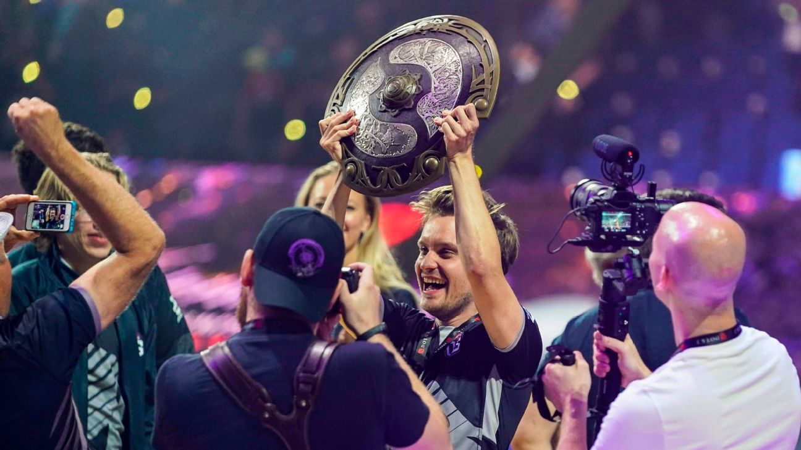

Biography
Team OG was originally formed under the name (monkey) Business and was comprised of both experienced veterans in n0tail and Fly as well as new and upcoming talents in Miracle-, Cr1t- and MoonMeander. The team achieved their breakthrough during the Frankfurt Major, defeating European powerhouse Team Secret in the grand finals. The team continued to have a strong presence in the European Dota scene, but after a fourth-place finish at The Summit 4, OG's dominance began to wane and ended with a 7-8th place finish in the Shanghai Major. Despite this, the team rebounded with a 3rd place finish at EPICENTER and claimed a second Dota Major Championship title at the Manila Major. The squad proceeded to defeat Natus Vincere at ESL One Frankfurt 2016, winning the tournament and securing their invite to The International 2016.
OG performed well in the group stage of The International 2016 and finished first in their group. Despite this, the team was unable to maintain their momentum and fell to the loser's bracket against MVP Phoenix. 7ckingmad would later say in his 'Reflections' interview with Duncan "Thorin" Shields that they chose to play MVP Phoenix after their 'complete domination' of them at the Manila Major, and that this may have been a mistake. Following this unexpected loss, the team was eliminated by TNC Gaming and finished 9-12th, in what has been referred to as one of the biggest upsets in professional Dota 2.[1] Shortly after their disappointing run, OG announced that MoonMeander would no longer be an active player, and that Cr1t- and Miracle- would be leaving the team. In the same 'Reflections' interview, 7ckingmad claimed that it was a personality conflict within the team that led to the removal of Moonmeander, and that once the team wasn't remaining as 5, it prompted Miracle to consider other offers.

Last Championship Win

The International 2019 is the concluding tournament of the Dota Pro Circuit and the ninth annual edition of The International. The tournament will be held on Chinese soil for the first time, as it moves to the Mercedes-Benz Arena in Shanghai.[1] Following the previous year format, a point system based on official sponsored Majors and Minors will be used to determine the twelve invites to The International.[2]
The International 2019. Score - 3 : 1. Money Won : $15,620,181